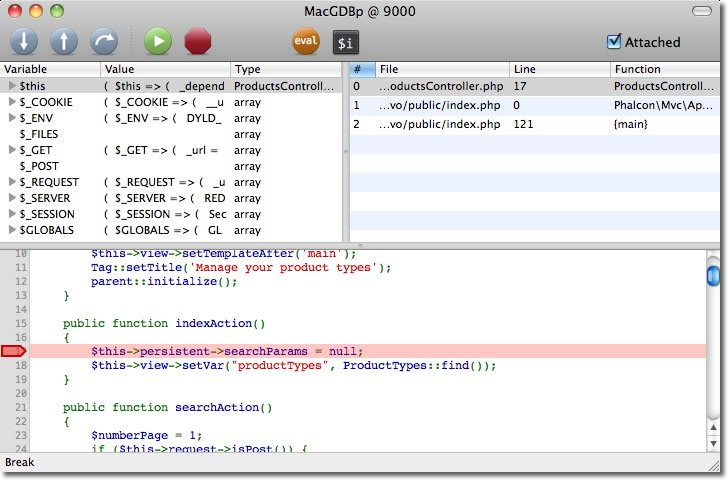

Debugging Applications¶

PHP offers tools to debug applications with notices, warnings, errors and exceptions. The Exception class offers information such as the file, line, message, numeric code, backtrace etc. on where an error occurred. OOP frameworks like Phalcon mainly use this class to encapsulate this functionality and provide information back to the developer or user. Despite being written in C, Phalcon executes methods in the PHP userland, providing the debug capability that any other application or framework written in PHP has. Catching Exceptions¶Throughout the tutorials and examples of the Phalcon documentation, there is a common element that is catching exceptions. This is a try/catch block: <?php
try {
//... some phalcon/php code
} catch(\Exception $e) {
}
Any exception thrown within the block is captured in the variable $e. A Phalcon\Exception extends the PHP Exception class and is used to understand whether the exception came from Phalcon or PHP itself. All exceptions generated by PHP are based on the Exception class, and have at least the following elements: <?php
class Exception
{
/* Properties */
protected string $message;
protected int $code;
protected string $file;
protected int $line;
/* Methods */
public __construct ([ string $message = "" [, int $code = 0 [, Exception $previous = NULL ]]])
final public string getMessage ( void )
final public Exception getPrevious ( void )
final public mixed getCode ( void )
final public string getFile ( void )
final public int getLine ( void )
final public array getTrace ( void )
final public string getTraceAsString ( void )
public string __toString ( void )
final private void __clone ( void )
}
Retrieving information from Phalcon\Exception is the same as PHP’s Exception class: <?php
try {
//... app code ...
} catch(\Exception $e) {
echo get_class($e), ": ", $e->getMessage(), "\n";
echo " File=", $e->getFile(), "\n";
echo " Line=", $e->getLine(), "\n";
echo $e->getTraceAsString();
}
It’s therefore easy to find which file and line of the application’s code generated the exception, as well as the components involved in generating the exception: PDOException: SQLSTATE[28000] [1045] Access denied for user 'root'@'localhost'
(using password: NO)
File=/Applications/MAMP/htdocs/invo/public/index.php
Line=74
#0 [internal function]: PDO->__construct('mysql:host=loca...', 'root', '', Array)
#1 [internal function]: Phalcon\Db\Adapter\Pdo->connect(Array)
#2 /Applications/MAMP/htdocs/invo/public/index.php(74):
Phalcon\Db\Adapter\Pdo->__construct(Array)
#3 [internal function]: {closure}()
#4 [internal function]: call_user_func_array(Object(Closure), Array)
#5 [internal function]: Phalcon\DI->_factory(Object(Closure), Array)
#6 [internal function]: Phalcon\DI->get('db', Array)
#7 [internal function]: Phalcon\DI->getShared('db')
#8 [internal function]: Phalcon\Mvc\Model->getConnection()
#9 [internal function]: Phalcon\Mvc\Model::_getOrCreateResultset('Users', Array, true)
#10 /Applications/MAMP/htdocs/invo/app/controllers/SessionController.php(83):
Phalcon\Mvc\Model::findFirst('email='demo@pha...')
#11 [internal function]: SessionController->startAction()
#12 [internal function]: call_user_func_array(Array, Array)
#13 [internal function]: Phalcon\Mvc\Dispatcher->dispatch()
#14 /Applications/MAMP/htdocs/invo/public/index.php(114): Phalcon\Mvc\Application->handle()
#15 {main}
As you can see from the above output the Phalcon’s classes and methods are displayed just like any other component, and even showing the parameters that were invoked in every call. The method Exception::getTrace provides additional information if needed. Debug component¶Phalcon provides a debug component that allows the developer to easily find errors produced in an application created with the framework. The following screencast explains how it works: To enable it, add the following to your bootstrap: <?php
$debug = new \Phalcon\Debug();
$debug->listen();
Any Try/Catch blocks must be removed or disabled to make this component work properly. Reflection and Introspection¶Any instance of a Phalcon class offers exactly the same behavior than a PHP normal one. It’s possible to use the Reflection API or simply print any object to show how is its internal state: <?php
$router = new Phalcon\Mvc\Router();
print_r($router);
It’s easy to know the internal state of any object. The above example prints the following: Phalcon\Mvc\Router Object
(
[_dependencyInjector:protected] =>
[_module:protected] =>
[_controller:protected] =>
[_action:protected] =>
[_params:protected] => Array
(
)
[_routes:protected] => Array
(
[0] => Phalcon\Mvc\Router\Route Object
(
[_pattern:protected] => #^/([a-zA-Z0-9\_]+)[/]{0,1}$#
[_compiledPattern:protected] => #^/([a-zA-Z0-9\_]+)[/]{0,1}$#
[_paths:protected] => Array
(
[controller] => 1
)
[_methods:protected] =>
[_id:protected] => 0
[_name:protected] =>
)
[1] => Phalcon\Mvc\Router\Route Object
(
[_pattern:protected] => #^/([a-zA-Z0-9\_]+)/([a-zA-Z0-9\_]+)(/.*)*$#
[_compiledPattern:protected] => #^/([a-zA-Z0-9\_]+)/([a-zA-Z0-9\_]+)(/.*)*$#
[_paths:protected] => Array
(
[controller] => 1
[action] => 2
[params] => 3
)
[_methods:protected] =>
[_id:protected] => 1
[_name:protected] =>
)
)
[_matchedRoute:protected] =>
[_matches:protected] =>
[_wasMatched:protected] =>
[_defaultModule:protected] =>
[_defaultController:protected] =>
[_defaultAction:protected] =>
[_defaultParams:protected] => Array
(
)
)
Using XDebug¶XDebug is an amazing tool that complements the debugging of PHP applications. It is also a C extension for PHP, and you can use it together with Phalcon without additional configuration or side effects. The following screencast shows a Xdebug session with Phalcon: Once you have xdebug installed, you can use its API to get a more detailed information about exceptions and messages.
The following example implements xdebug_print_function_stack to stop the execution and generate a backtrace <?php
class SignupController extends \Phalcon\Mvc\Controller
{
public function indexAction()
{
}
public function registerAction()
{
// Request variables from html form
$name = $this->request->getPost("name", "string");
$email = $this->request->getPost("email", "email");
// Stop execution and show a backtrace
return xdebug_print_function_stack("stop here!");
$user = new Users();
$user->name = $name;
$user->email = $email;
// Store and check for errors
$user->save();
}
}
In this instance, Xdebug will also show us the variables in the local scope, and a backtrace as well: Xdebug: stop here! in /Applications/MAMP/htdocs/tutorial/app/controllers/SignupController.php
on line 19
Call Stack:
0.0383 654600 1. {main}() /Applications/MAMP/htdocs/tutorial/public/index.php:0
0.0392 663864 2. Phalcon\Mvc\Application->handle()
/Applications/MAMP/htdocs/tutorial/public/index.php:37
0.0418 738848 3. SignupController->registerAction()
/Applications/MAMP/htdocs/tutorial/public/index.php:0
0.0419 740144 4. xdebug_print_function_stack()
/Applications/MAMP/htdocs/tutorial/app/controllers/SignupController.php:19
Xdebug provides several ways to get debug and trace information regarding the execution of your application using Phalcon. You can check the XDebug documentation for more information. |